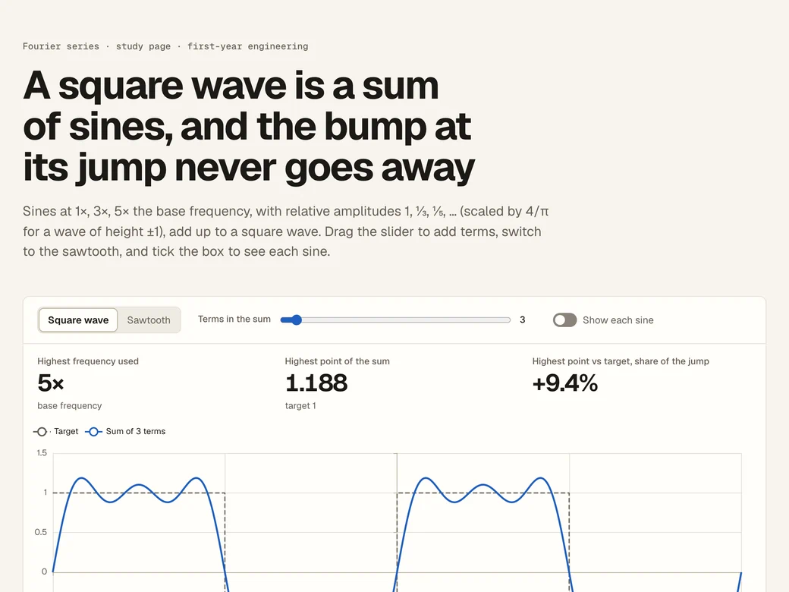
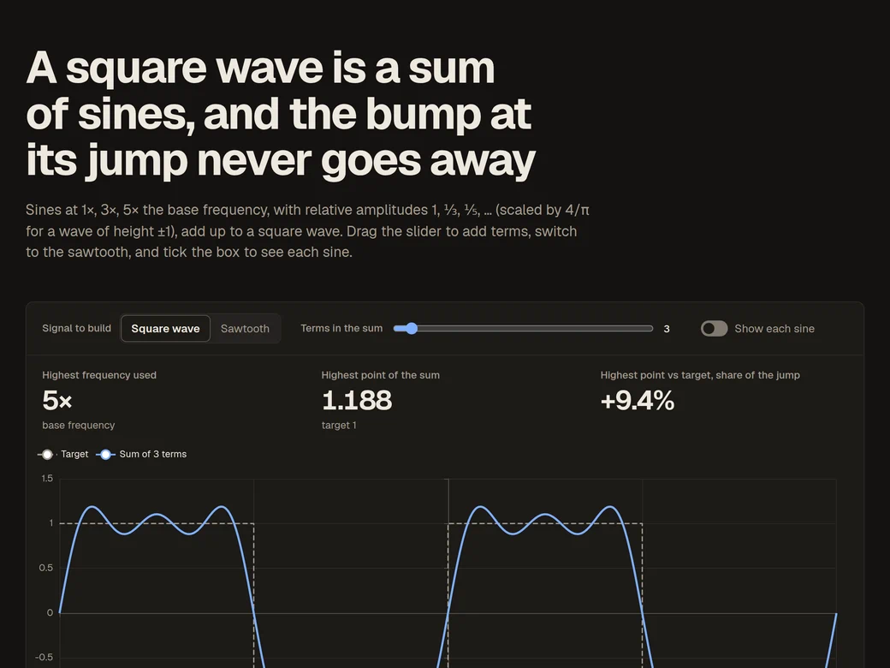
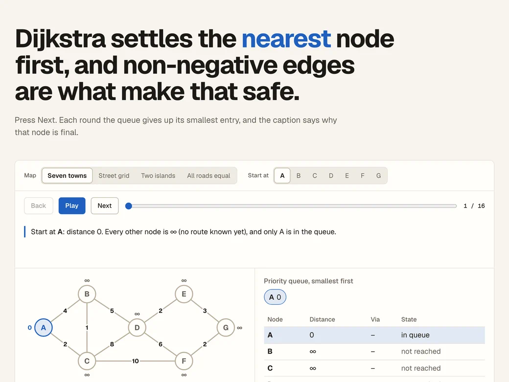
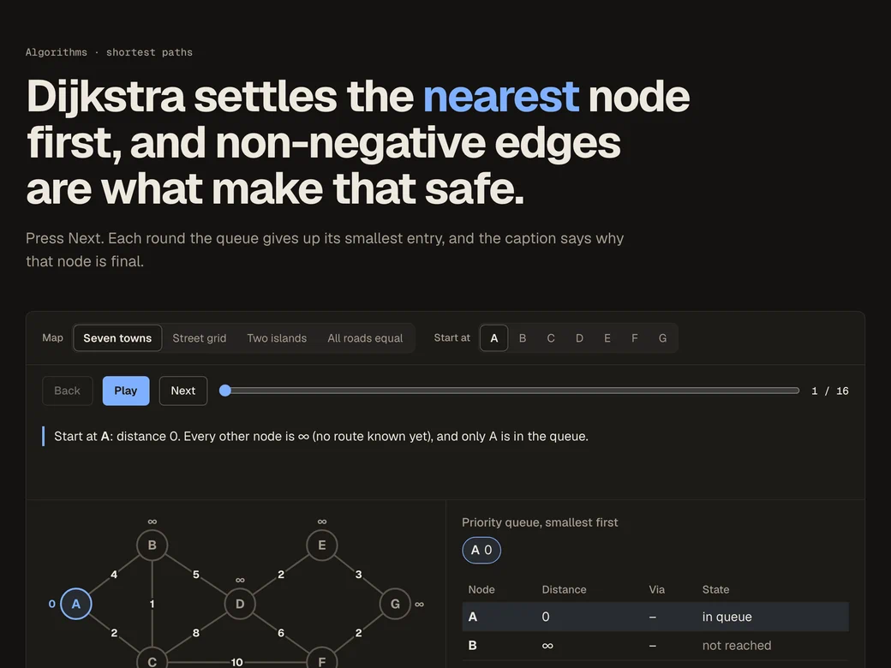
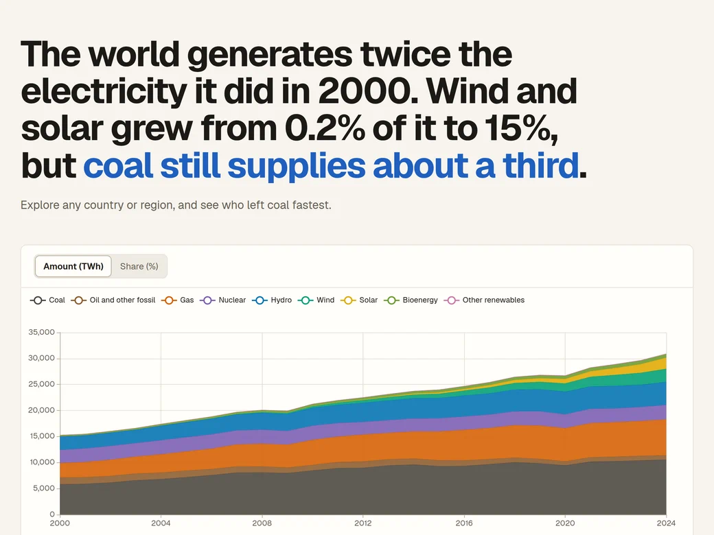
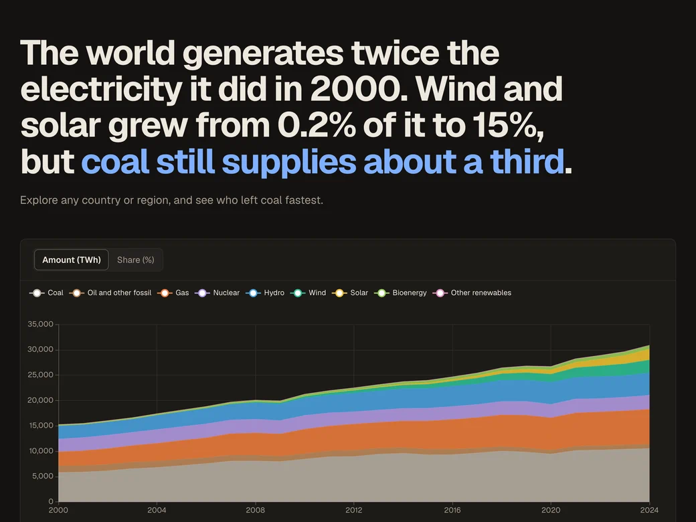
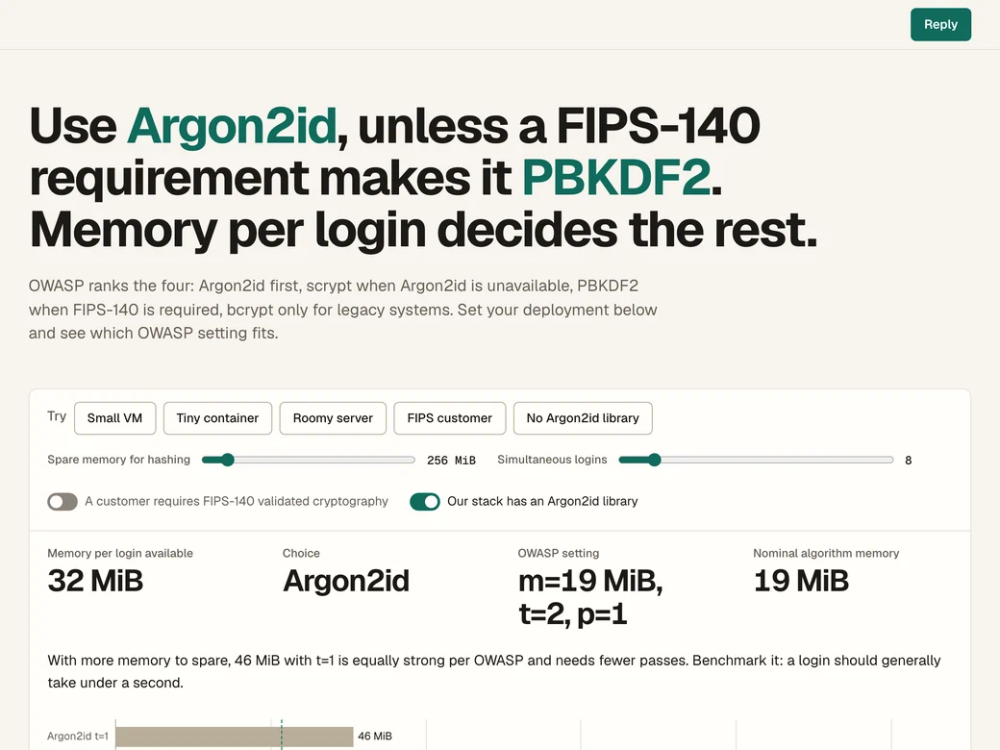
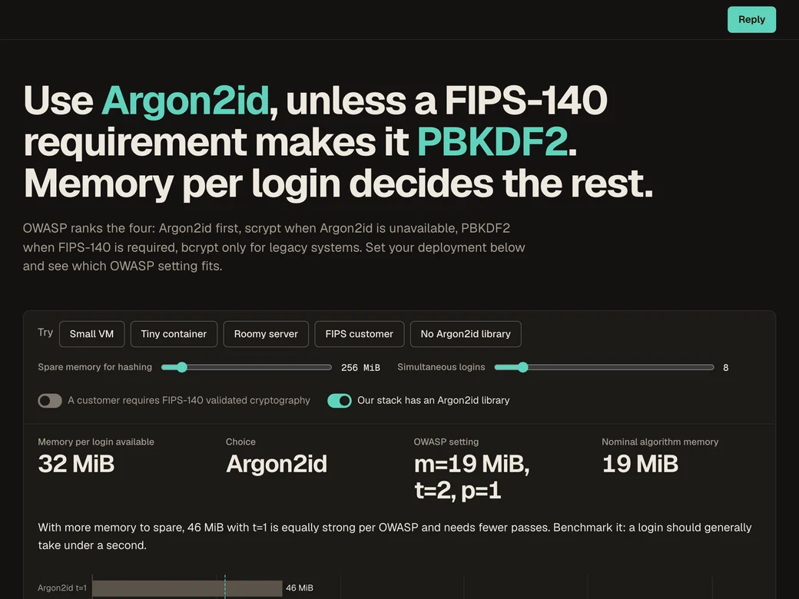

Four pages an agent built with the explainer skill
Each one is a single HTML file that works offline. An agent wrote it from the skill's guide, pack made it self-contained, and check screenshotted it in light and dark at desktop and phone width.


Fourier series
Study page. Drag the terms slider to build a square wave, try each question before opening its answer, and find your own answers still there after a reload.


Dijkstra's algorithm
Step-through. Four maps and any start node, with the queue and distance table at each step, and what one negative edge breaks.


World electricity mix
Data explorer. 223 places from Our World in Data: see how each source changed since 2000, rank who left coal fastest over a period you choose, and click a bar to open that country.


Choosing a password hash
Decision page. Set memory, concurrent logins and FIPS needs, and see which OWASP setting fits, or that none does.